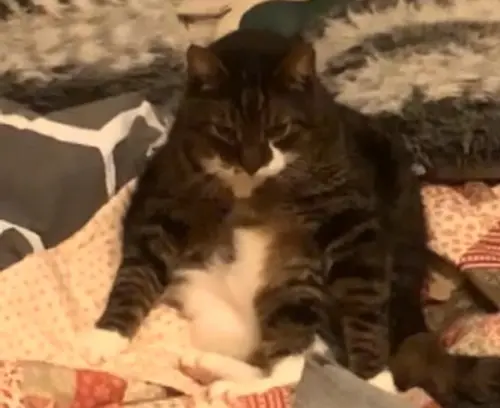

Gizmo er min gamle dovne kat! Han elsker at ligge i vindueskammen hele dagen og sole sig. Han er meget nysgerrig og elsker at fange rotter og mus. Han kan også være en rigtig ballademager og river tit totterne af de andre katte i området.
Du kan læse mere om katte og hvordan man passer sine katte på Dyrenes Beskyttelse.